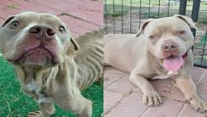
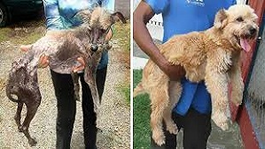
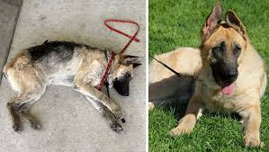
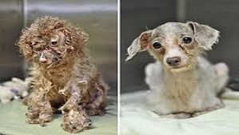
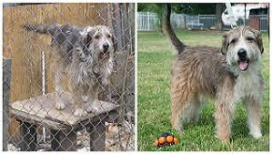

Rescued by:Mr Nilen Chopra
Toby was seriously malnourished when he was found by Mr. Nilen who contacted us.Today with the help of our partner clinics, he is back to normal and now stays with his family that adopted him!
Rescued by:Miss Rashmi Yadav
Toby was seriously malnourished when he was found by Mr. Nilen who contacted us.Today with the help of our partner clinics, he is back to normal and now stays with his family that adopted him!
Rescued by:Mrs Madhumita Gadge
Toby was seriously malnourished when he was found by Mr. Nilen who contacted us.Today with the help of our partner clinics, he is back to normal and now stays with his family that adopted him!
Rescued by:Mr Yash Mhatre
Toby was seriously malnourished when he was found by Mr. Nilen who contacted us.Today with the help of our partner clinics, he is back to normal and now stays with his family that adopted him!
Rescued by:Mr Dipen Mishra
Toby was seriously malnourished when he was found by Mr. Nilen who contacted us.Today with the help of our partner clinics, he is back to normal and now stays with his family that adopted him!
Rescued by:Mr Malik Carter
Toby was seriously malnourished when he was found by Mr. Nilen who contacted us.Today with the help of our partner clinics, he is back to normal and now stays with his family that adopted him!